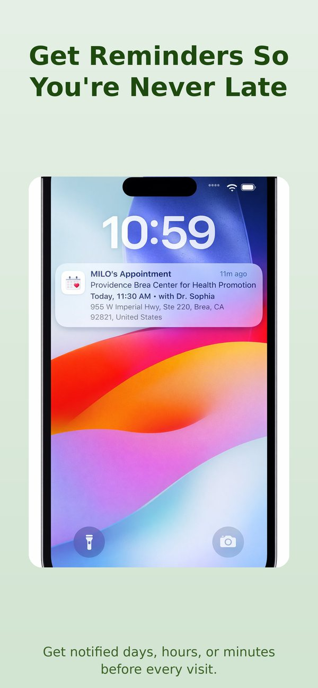

I used to pay $100 a year in no-show fees. Now I pay zero.
Here's something a little embarrassing to admit. Before I built CareDay Family, I paid around $100 a year in no-show fees. Forty dollars here for a missed doctor's visit, more there for an appointment I booked months earlier and completely lost track of.
I wasn't skipping on purpose. I'd just forget. Or I'd remember the morning of, when it was too late to get off work or find a ride.
Since I started using CareDay, I haven't missed a single medical appointment. Not one. That's $0 in no-show fees, and a lot less stress.
No-show fees are more common than you think
If you've never been charged one, you might be surprised how many offices do it now. In a January 2025 poll of medical practices, 42% said they charge a no-show fee.1 Amounts vary a lot: practice managers report anywhere from $25 for a regular visit to $150 or more, and some specialists charge $250 when someone misses a surgery appointment.2
And the fee is only part of it. A missed appointment usually means going back to the end of the line, and getting in to see a doctor can take weeks or even months. I wrote more about that in One appointment, five apps.
Most no-shows come down to two things
From my own experience, I think almost every missed appointment comes down to one of these:
- You forget. The appointment was booked three months ago at the front desk, written on a little card that's now somewhere in your car.
- You forget to plan. You remember the appointment, but not in time to ask for the afternoon off, arrange a ride, pick up the kids or find the insurance card.
A normal calendar alert helps with the first one, a little. It does nothing for the second. A reminder 15 minutes before doesn't help when you still need to drive across town.
How CareDay fixed it for me
CareDay sends reminders a week, a day and an hour before every appointment. The one-week reminder is the one that changed things for me. It's early enough to actually plan: tell work, move a meeting, line up a ride, let the school know.
The day-before reminder makes sure it's on my mind, and the one-hour reminder gets me out the door. When it's time to go, I swipe the appointment for directions, and my insurance card and questions are already in the app.

Your results might be different from mine, of course. But if you've paid even one no-show fee, you already know what it costs to forget.
Why I build things like this
I like building things that make people's lives a little easier. Not flashy things, just useful ones. Missing an appointment feels small, but it isn't when it's your kid's checkup, your mom's specialist, or a visit you waited two months for.
CareDay started as something I built for my own family. When it worked for us, I wanted other families to have it too.
Why CareDay is a one-time purchase
I didn't want CareDay to be another subscription you forget to cancel. So here's how it works:
- It's free to start. You get up to 12 appointments and 6 documents, enough to really try it for a few months.
- Decide for yourself. If it's helped you, you can unlock CareDay Pro with a one-time purchase for unlimited appointments and documents.
- No subscription and no ads. You pay once, and it's yours.
- Share it with your family. CareDay Pro works with Apple Family Sharing, so one purchase covers everyone in your family group.
I'd rather you use the app first and decide it's worth it than pay before you know. If it saves you from even one no-show fee, I think it will have paid for itself.
More important than the money
Yes, CareDay can save you money. But the fees were never the worst part of missing an appointment. The worst part was missing the care.
When you book an appointment, you're signing up for something that matters: a checkup that catches a problem early, a specialist you waited months to see, a refill you need, an answer to a question that's been worrying you. A missed appointment means going without that care for weeks or months longer.
That's what I really want CareDay to protect. Not just your wallet, but the care you signed up for, for you and everyone you look after.